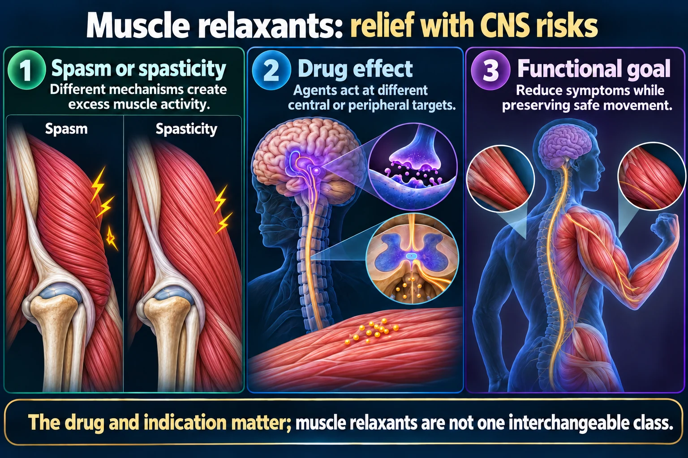

Top Tips — Drug-by-Drug NCLEX Quick Reference
This page is the quick-reference companion — one snapshot card per named drug with its own memory trick, plus the traps NCLEX loves. For class-wide mechanism (central vs peripheral), general contraindications, interactions & the sedation/fall-risk safety rule, see NG-155 (Muscle Relaxants) — not repeated here.
→ Open NG-155: Muscle Relaxants (class overview + mechanism)📄 Simple Nursing original — opens in Drive →
Four named drugs, four separate personalities — one memory hook each.

The drug and indication matter; muscle relaxants are not one interchangeable class.
Spasm or spasticity
Different mechanisms create excess muscle activity.
Drug effect
Agents act at different central or peripheral targets.
Functional goal
Reduce symptoms while preserving safe movement.
Monitor
Sedation, dizziness, weakness and falls.
Interactions
Other sedating drugs or alcohol can increase impairment.
Teaching
Follow the tapering and dosing plan; abrupt withdrawal is dangerous with some agents.
Used for:
Watch for:
Used for: acute muscle spasm — short-term only (max 2–3 weeks).
Watch for:
MOA: enhances GABA (an inhibitory neurotransmitter) at GABA-B receptors — "makes everything low & slow."
Used for: decreased flexor/extensor spasticity — spinal cord injury, MS, cerebral palsy.
Watch for:
Used for: acute muscle spasm — e.g., after surgery on open fractures.
Watch for:
The traps test-writers reuse across this class — spot the pattern, not just the answer.
A classic SATA stem: "When providing education to a patient newly prescribed cyclobenzaprine, which instructions should be included?" Options mix real teaching with disguised distractors. Practice spotting the pattern rather than memorizing this exact stem:
Test writers love testing whether you know dantrolene has two separate uses: emergency IV treatment of malignant hyperthermia AND oral use for chronic spasticity. Don't assume a dantrolene question is automatically about MH — read the scenario.
A client reports dizziness with position changes on baclofen. This is NOT a reason to withhold the dose or call it a contraindication — orthostatic dizziness is an expected side effect. Teach slow position changes instead.
One teaching sentence per drug — grab-and-go for clinical or a quick quiz review.
| Drug | Say this | Highest-yield trap |
|---|---|---|
| Dantrolene | "We'll be checking your liver function while you're on this." | Hepatotoxicity monitoring |
| Cyclobenzaprine | "This is short-term — 2 to 3 weeks — and don't mix it with alcohol." | TCA-like anticholinergic effects |
| Baclofen | "Never stop this suddenly, even if you feel better — we'll taper it." | Rebound spasticity/seizures |
| Carisoprodol | "This is a controlled medication — take exactly as prescribed." | Meprobamate metabolite, abuse potential |